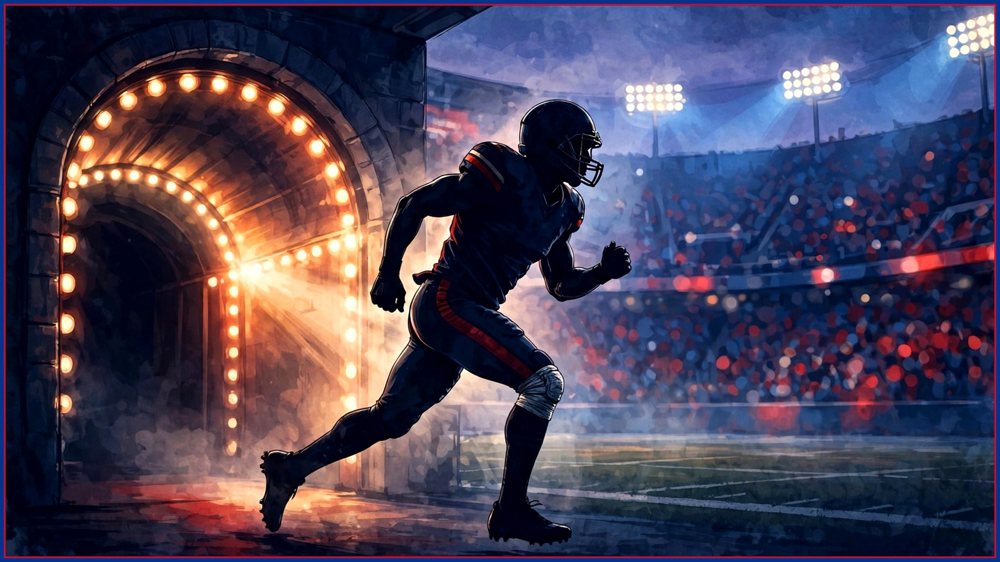

He played through a torn ACL. Now Tyrell Shavers is back.
Tyrell Shavers tore his ACL in last season's Wild Card game — and stayed in it. Designated to return and back at practice Wednesday, he drew the quote of the week from Josh Allen: 'one of the best teammates I've ever had.'

There are tougher ways to earn a locker room's respect than playing playoff football on a torn ACL. There just aren't many. On Wednesday, Tyrell Shavers practiced with the Buffalo Bills for the first time since that injury, designated to return from injured reserve ahead of Sunday's home game against the Baltimore Ravens — Nov. 1, 1 PM ET at Highmark Stadium. Head coach Joe Brady announced the move, and just like that, the best story in the building this week wasn't about a quarterback duel or an injury report. It was about a receiver who refused to leave a playoff game his knee had already left.
Go back to last season's Wild Card round against the Jacksonville Jaguars. Shavers hurt his knee in that game — an ACL injury, the kind that ends seasons and rewrites careers. He did not come out. Per Bills Wire's reporting on his return this week, Shavers did not exit the Jaguars game when he got hurt. He played through a torn ACL in a win-or-go-home playoff game. Read that sentence again, slowly, the way his teammates clearly have. That is not toughness as a talking point. That is a player deciding, in real time, that his team needed the version of him that was still standing.
Shavers called the road back exactly what it was. 'A long road,' he said, via Bills Wire. 'You learn a lot about yourself.' And then Josh Allen said the part that tells you how this story landed inside the room: 'It's awesome. He's got one of the best stories out there,' Allen said. 'He's one of the best teammates I've ever had.' Quarterbacks hand out compliments every week in this league — it's part of the job. 'One of the best teammates I've ever had' is not part of the job. That's a franchise quarterback telling you, on the record, what a guy on the roster's edge means to the people who actually share a huddle with him.
Now the honest part, because the Culture Desk doesn't sell timelines as guarantees. Being designated to return opens a 21-day practice window — it does not confirm Shavers will be active against Baltimore, or any specific Sunday. Bills Wire was clear on that point, and so are we: whether he dresses this week is still to be seen. A receiver coming back from an ACL injury has to stack practices, take contact, and prove the knee trusts him before the team trusts the knee in a game. Wednesday was step one. It was a big step one, but it was step one.
Which is exactly why this story fits Buffalo the way it does. This fan base has a type, and it has never been the loudest name on the marquee. It's the player who earns everything the hard way, who treats a roster spot like something you defend every single day, who plays special teams snaps and January snaps with the same desperation. Shavers played through a torn ACL in a playoff game. You cannot manufacture that kind of credibility, and you cannot fake your way into Allen saying what Allen said. In a week dominated by who is limited, who is full, and who is trending, Shavers' return is the reminder that some players' value never showed up on a participation report in the first place.
There is a football layer, too, and it matters without overstating it. Buffalo's receiver room is working through a real week: DJ Moore was limited in Wednesday's practice in a non-contact jersey as he works back from his shoulder injury, per Wednesday's reports — his status for Sunday is unconfirmed. Depth that a quarterback trusts is never a luxury in November, and a receiver Allen calls one of his best teammates is, at minimum, a name defensive coordinators and special teams coaches have to account for again soon, even if 'soon' turns out to be a week or two past the Ravens.
So welcome back, Tyrell. Whether the comeback becomes official under the lights on Sunday or a little further down the road, Wednesday already said plenty: the long road led back to the practice field, the quarterback who runs this franchise lit up talking about it, and a fan base that adopts grinders like family has a new favorite story to tell. Some returns are injury news. This one is Buffalo news. Go Bills.
The BNC Blitz is free: the day's Bills news, one stat that matters, and one take, every morning. Join to keep reading — and never miss the end of a story again.